This chapter covers the major architectural features of distributed sytems.
本章涵盖了分布式系统架构的主要特性。
You can't build a system without some idea of what you want to build. And you can't build it if you don't know the environment in which it will work. GUI programs are different to batch processing programs; games programs are different to business programs; and distributed programs are different to standalone programs. They each have their approaches, their common patterns, the problems that typically arise and the solutions that are often used.
你若不知道你想构建什么，就无法构建一个系统。而如果你不知道它会在何种环境下工作，也同样不行。就像GUI程序不同于批处理程序，游戏程序不同于商业程序一样，分布式程序也不同于独立的程序。它们都有各自的方法，常见的模式，经常出现的问题以及常用的解决方案。
This chapter covers the highl evel architectural aspects of distributed systems. There are many ways of looking at such systems, and many of these are dealt with.
本章涵盖了分布式系统的上层架构，从多种角度考虑了这样的系统及其依赖。
Distributed systems are hard. There are multiple computers involved, which have to be connected in some way. Programs have to be written to run on each computer in the system and they all have to co-operate to get a distributed task done.
分布式系统很复杂，它涉及到多台计算机的连接方式。我们编写的程序必须能在该系统中的每一台计算机上运行，它们必须都能协同操作来完成一项分布式任务。
The common way to deal with complexity is to break it down into smaller and simpler parts. These parts have their own structure, but they also have defined means of communicating with other related parts. In distributed systems, the parts are called protocol layers and they have clearly defined functions. They form a stack, with each layer communicating with the layer above and the layer below. The communication between layers is defined by protocols.
解决这种复杂性的一般方法，就是将它分解为更小更简单的部分。这些部分都有它们自己的结构，但也定义了与其它相关部分进行通信的方式。在分布式系统中，这种部分称为协议层，它们的功能都有明确的定义。它们在一起形成层次结构，并与其各自的上下层进行通行。层次之间的通信则由协议来定义。
Network communications requires protocols to cover high-level application communication all the way down to wire communication and the complexity handled by encapsulation in protocol layers.
网络通信所需的协议覆盖了从上层应用通信一直到底层有线通信的所有方式，它们的复杂性通过在协议层中进行封装来处理。
Although it was never properly implemented, the OSI (Open Systems Interconnect) protocol has been a major influence in ways of talking about and influencing distributed systems design. It is commonly given in the following figure:
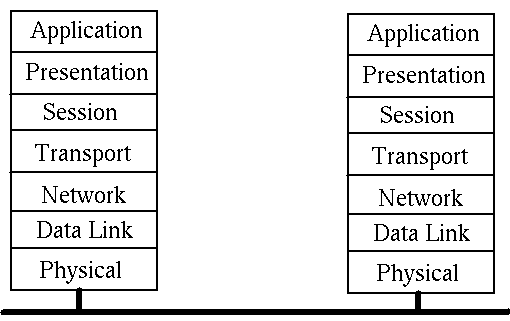
尽管OSI（开放系统互联）协议从未被完整地实现过，但它仍对分布式系统的讨论和设计产生了十分重要的影响。它的结构大致为下图所示：
The function of each layer is:
每一层的功能为：
While the OSI model was being argued, debated, partly implemented and fought over, the DARPA internet research project was busy building the TCP/IP protocols. These have been immensely succesful and have led to The Internet (with capitals). This is a much simpler stack:
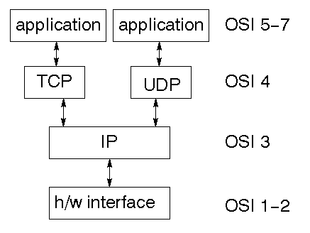
当OSI标准模型正在为实现细节闹得不可开交时，DARPA互联网技术项目却在忙着构建TCP/IP协议。它们取得了极大的成功，并引领了Internet（首字母大写），因为这是个更简单的层次结构：

Although it almost seems like it, the TCP/IP protocols are not the only ones in existence and in the long run may not even be the most successful. There are many protocols occupying significant niches, such as
尽管现在到处都是TCP/IP协议，但它并不是唯一存在的。从长远来看，它甚至不会是最成功的。还有些协议占有重要的地位，比如：
Thre is active work continuing on many other protocols, even quite bizarre ones such as those for the "internet in space."
还有些其它的协议在继续活跃地工作，甚至还有些像“太空互联网”这样奇怪的协议。
The focus in this book will be on the TCP/IP, but you should be aware of these other ones.
本书将重点介绍TCP/IP，但你也应当了解一些其它的协议。
A network is a communications system for connecting end systems called hosts. The mechanisms of connection might be copper wire, ethernet, fibre optic or wireless, but that won't concern us here. A local area network (LAN) connects computers that are close together, typically belonging to a home, small organisation or part of a larger organisation.
网络是一个通信系统，它连接了称为主机的最终系统。这种连接机制可以是铜线、以太网、光纤或无线，但这些与我们无关。局域网（LAN）将计算机紧密地连接在一起，一般为家庭、小型组织或大型组织的一部分。
A Wide Area Network (WAN) connects computers across a larger physical area, such as between cities. There are other types as well, such as MANs (Metropolitan Area Network), PANs (Personal Are Networks) and even BANs (Body Are Network).
广域网（WAN）连接起一个更大物理区域的计算机，例如城际间。还有些其它的类型，如城域网（MAN）、个人域网（PAN）甚至人体域网（BAN）。
An internet is a connection of two or more distinct networks, typically LANs or WANs. An intranet is an internet with all networks belonging to a single organisation.
互联网是多个不同网络的连接，一般为LAN或WAN。内联网是属于某个组织的所有网络加上互联网。
There are significant differences between an internet and an intranet. Typically an intranet will be under a single administrative control, which will impose a single set of coherent policies. An internet on the other hand will not be under the control of a single body, and the controls exercised over different parts may not even be compatable.
互联网与内联网之间有明显的不同。一般来说，一个内联网处在单一的管控之下，它将被应用一组统一的策略。另一方面，一个互联网则不会在单一主体的控制之下，控制的不同部分甚至可能会不兼容。
A trivial example of such differences is that an intranet will often be restricted to computers by a small number of vendors running a standardised version of a particular operating system. On the other hand, an internet will often have a smorgasborg of different computers and operating systems.
这种不同的一个例子，就是一个内联网通常被少量供应商提供的，运行着特定操作系统标准化版本的计算机所限制。另一方面，一个互联网通常有各种各样的计算机和操作系统。
The techniques of this book will be applicable to internets. They will also be valid for intranets, but there you will also find specialised, non-portable systems.
本书中的技术可应用于互联网。它们对内联网也是有效的，但你也会发现一些专有的，不可移植的系统。
And then there is the "mother" of all internets: The Internet. This is just a very, very large internet that connects us to Google, my computer to your computer and so on.
所有互联网都有一个“母网”：因特网。它其实就是个非常巨大的互联网，它将我们与Google、我们的计算机等等互相连接起来。
A gateway is a generic term for an entity used to connect two or more networks. A repeater operates at the physical level copies the information from one subnet to another. A bridge operates at the data link layer level and copies frames between networks. A router operates at the network level and not only moves information between networks but also decides on the route.
网关是一个统称，它用于连接起一个或多个网络。其中的中继器在物理层面上进行操作，它将信息从一个子网复制到另一个子网上。桥接在数据连接层面上进行操作，它在网络之间复制帧。路由器在网络层面上进行操作，它不仅在网络之间复制信息，还决定了信息的传输路线。
The communication between layers in either the OSI or the TCP/IP stacks is done by sending packets of data from one layer to the next, and then eventually across the network. Each layer has administrative information that it has to keep about its own layer. It does this by adding header information to the packet it receives from the layer above, as the packet passes down. On the receiving side, these headers are removed as the packet moves up.
在OIS或TCP/IP协议栈层与层之间的通信，是通过将数据包从一个层发送到下一个层，最终穿过整个网络的。每一层都有必须保持其自身层的管理信息。从上层接收到的数据包在向下传递时，会添加头信息。在接收端，这些头信息会在向上传递时移除。
For example, the TFP (Trivial File Transfer Protocol) moves files from one computer to another. It uses the UDP protocol on top of the IP protocol, which may be sent over Ethernet. This looks like:
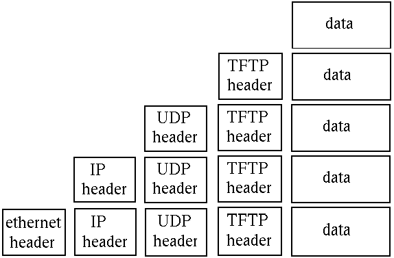
The packet transmitted over ethernet, is of course the bottom one.
例如，TFTP（普通文件传输协议）将文件从一台计算机移动到另一台上。它使用IP协议上的UDP协议，该协议可通过以太网发送。看起来就像这样：

通过以太网发送的数据包，当然是底部那个。
In order for two computers to communicate, they must set up a path whereby they can send at least one message in a session. There are two major models for this:
为了两个计算机进行通信，就必须建立一个路径，使他们能够在一个会话中发送至少一条消息。有两个主要的模型：
A single connection is established for the session. Two-way communications flow along the connection. When the session is over, the connection is broken. The analogy is to a phone conversation. An example is TCP
即为会话建立单个连接，沿着连接进行双向通信。当会话结束后，该连接就会断开。这类似于电话交谈。例子就是TCP。
In a connectionless system, messages are sent independant of each other. Ordinary mail is the analogy. Connectionless messages may arrive out of order. An example is the IP protocol. Connection oriented transports may be established on top of connectionless ones - TCP over IP. Connectionless transports my be established on top of connection oriented ones - HTTP over TCP.
在无连接系统中，消息的发送彼此独立。这类似于普通的邮件。无连接模型的消息可能不按顺序抵达。例子就是IP协议。面向连接的传输可通过无连接模型——基于IP的TCP协议建立。无连接传输可通过面向连接模型——基于IP的HTTP协议建立。
There can be variations on these. For example, a session might enforce messages arriving, but might not guarantee that they arrive in the order sent. However, these two are the most common.
这些是可变的。例如，会话可能会强制消息抵达，但可能无法保证它们按照发送的顺序抵达。不过这两个是最常见的。
Some non-procedural languages are built on the principle of message passing. Concurrent languages often use such a mechanism, and the most well known example is probably the Unix pipeline. The Unix pipeline is a pipeline of bytes, but there is not an inherent limitation: Microsoft's PowerShell can send objects along its pipelines, and concurrent languages such as Parlog could send arbitrary logic data structures in messages between concurrent processes.
一些非过程化语言建立在消息传递原理上。并发语言经常使用这种机制，最有名的大概要数Unix的管道了。Unix管道就是一管字节，但它并没有固定的限制：微软的PowerShell可沿着其管道发送对象；而像Parlog这样的并发语言，则能在并发的进程之间，将任意的逻辑数据结构当做消息来发送。
Message passing is a primitive mechanism for distributed systems. Set up a connection and pump some data down it. At the other end, figure out what the message was and respond to it, possibly sending messages back. This is illustrated by
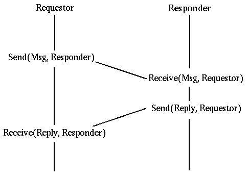
消息传递是分布式系统最基本的机制，也就是建立连接并通过它传输一些数据。在另一端则需要理解这些消息的意思并做出响应，有时还需要返回一些消息。如下图所示：

Low level event driven systems such as the X Window System function in a somewhat similar way: wait for message from a user (mouse clicks, etc), decode them and act on them.
诸如X窗口系统之类的底层事件驱动系统功能也采用了类似的方式：等待用户的消息（如鼠标点击等），对它们进行解码并做出反应。
Higher level event driven systems assume that this decoding has been done by the underlying system and the event is then dispatched to an appropriate object such as a ButtonPress handler. This can also be done in distributed message passing systems, whereby a message received across the network is partly decoded and dispatched to an appropriate handler.
更高层的事件驱动系统则假定底层系统已经解码完成，接着该事件被分配给适当的对象，如ButtonPress处理程序。这也适用于分布式消息传递系统，通过对从网络接收的消息进行部分解码，并分配给适当的处理程序。
In any system, there is a transfer of information and flow control from one part of the system to another. In procedural languages this may consist of the procedure call, where information is placed on a call stack and then control flow is transferred to another part of the program.
在任何系统中，都有信息传输和流程控制来将该系统的一部分传到另一部分。在过程化语言中，它由过程调用来组成，其中的信息被放置到调用栈上，接着控制流程被传递至该程序的另一部分。
Even with procedure calls, there are variations. The code may be statically linked so that control transfers from one part of the program's executable code to another part. Due to the increasing use of library routines, it has become commonplace to have such code in dynamic link libraries (DLLs), where control transfers to an independent piece of code.
甚至过程调用也有变化。代码可被静态链接，以便于控制从该程序可执行代码的一部分传输到另一部分。随着库例程的使用日益增多，将这类代码作为动态链接库（DLL）也变得司空见惯了，它用来控制传输独立的代码片段。
DLLs run in the same machine as the calling code. it is a simple (conceptual) step to transfer control to a procedure running in a different machine. The mechanics of this are not so simple! However, this model of control has given rise to the "remote procedure call" (RPC) which is discussed in much detail in a later chapter. This is illustrated by
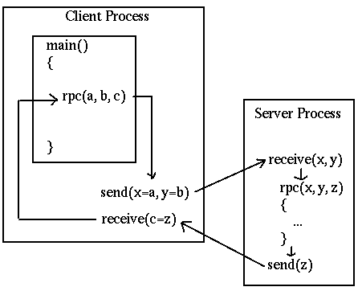
DLL作为调用代码运行在相同的机器上。尽管对于不同机器上运行的过程传输控制来说，这种机制（在概念上）是一种简单的手段，但它实际上可不怎么简单！不过，这种控制模型却催生了“远程过程调用”（RPC），更多关于它的详情会在后面的章节中讨论。如下图所示：

There is an historical oddity called the "lightweight remote procedure call" invented by Microsoft as they transitioned from 16-bit to 32-bit applications. A 16-bit application might need to transfer data to a 32-bit application on the same machine. That made it lightweight as there was no networking! But it had many of the other issues of RPC systems in data representations and conversion.
微软在从16位应该过渡到32位时，曾发明过一种称为“轻量远程过程调用”的奇怪东西。16位应用可能需要在相同的机器上向32位应用传输数据。由于没有网络，竟使得它很轻量！不过，它也有RPC系统在数据表达和转换上的其它问题。
At the highest lvel, we could consider the equivalence or the non-equivalence of components of a distributed system. The most common occurrence is an asymmetric one: a client sends requests to a server, and the server responds. This is a client-server system.
在最上层，我们可以考虑分布式系统的组件是否等价。最常见的就是不对等的情况：客户端向服务器发送请求，然后服务端响应。这就是客户端-服务器系统。
If both components are equivalent, both able to initiate and to respond to messages, then we have a peer-to-peer system. Note that this is a logical classification: one peer may be a 16,000 core mainframe, the other might be a mobile phone. But if both can act similarlym then they are peers.
若两个组件等价，且均可发起并响应信息，那么我们就有了一个点对点系统。注意这是个逻辑上的分类：一点可能是16,000个核心主机，而另一点可能只是个移动电话。但如果二者的行为类似，那么它们就都是点。
A third model is the so-called filter. Here one component passes information to another which modifies it before passing it to a third. This is a fairly common model: for example, the middle component gets information from a database as SQl records and transforms it into an HTML table for the third component (which might be a browser).
第三种模型也就是所谓的过滤器。有一个组件将信息传至另一个组件，它在修改该信息后会传至第三个组件。这是个相当普遍的模型：例如，中间组件通过SQL从数据库中获取信息，并将其转换为HTML表单提供给第三个组件（它可能是个浏览器）。
These are illustrated as:
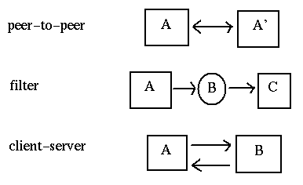
如下所示：

Another view of a client server system is
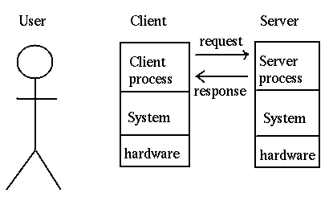
客户端/服务器系统的另一种方式：

And a third view is
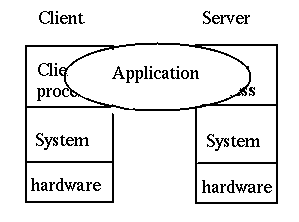
第三种方式：

A client-server systems need not be simple. The basic model is single client, single server
but you can also have multiple clients, single server
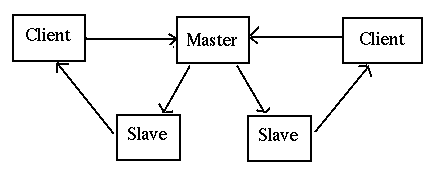
In this, the master receives requests and instead of handling them one at a time itself, passes them off to other servers to handle. This is a common model when concurrent clients are possible.
客户端/服务器系统并不简单。其基本模型是单一客户端，单一服务器：

不过你也可以有多个客户端，单一服务器：

这样，主站只需接收请求并处理一次，而无需将它们传递给其它服务器来处理。当客户端可能并发时，这就是个通用的模型。
There are also single client, multiple servers
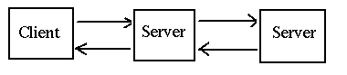 which occurs frequently when a server needs to act as a client to other servers, such as a business logic server getting information from a database server. And of course, there could be multiple clients with multiple servers
还有单一客户端，多个服务器的情况：
 当一个服务器需要作为其它服务器的客户端时，这种情况就会经常发生，例如当业务逻辑服务器从数据库服务器获取信息时。当然，还可以有多个客户端，多个服务器的情况。
当一个服务器需要作为其它服务器的客户端时，这种情况就会经常发生，例如当业务逻辑服务器从数据库服务器获取信息时。当然，还可以有多个客户端，多个服务器的情况。
A simple but effective way of decomposing many applications is to consider them as made up of three parts:
分解一些应用的一个简单有效的方式就是把它们看做三部分：
The presentation component is responsible for interactions with the user, both displaying data and gathering input. it may be a modern GUI interface with buttons, lists, menus, etc, or an older command-line style interface, asking questions and getting answers. The details are not important at this level.
表现组件负责与用户进行交互，即显示数据和采集输入。它可以是带有按钮、列表和菜单等等的现代GUI界面，或较老的命令行式界面，询问问题并获取答案。在这一层上，具体详情并不重要。
The application logic is responsible for intrepreting the users' responses, for applying business rules, for preparing queries and managing responses from the thir component.
应用逻辑组件负责解释用户的响应，根据应用业务规则，准备查询并管理来自其组件的响应。
The data access component is responsible for stroing and retrieving data. This will often be through a database, but not necessarily.
数据访问组件负责存储并检索数据。这一般是通过数据库进行，不过也不一定。
Based on this threefold decomposition of applicaitons, Gartner considered how the components might be distributed in a client-server sysem. They came up with five models:

基于这三部分的应用划分，Gartner公司考虑了这些组件在客户端-服务器系统中如何分布。他们想出了五种模型：

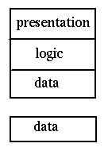
Modern mobile phones make good examples of this: due to limited memory they may store a small part of a database locally so that they can usuall respond quickly. However, if data is required that is not held locally, then a request may be made to a remote database for that additional data.

现代的移动电话就是个很好的例子：由于内存有限，它们只能通过存储一小部分本地数据库，因此它们通常能快速响应。若请求的数据不在本地，那么可为该附加数据请求远程数据库。
Google maps forms another good example. Al of the maps reside on Google's servers. When one is requested by a user, the "nearby" maps are also downloaded into a small database in the browser. When the user moves the map a little bit, the extra bits required are already in the local store for quick response.
Google地图的形式是另一个很好的例子。所有的地图都在Google的服务器上。当用户请求时，“附近的”地图也会下载为一个浏览器中的小型数据库。当用户移动了一点地图时，额外的一点请求已经为快速响应在本地存储中了。
Gartner classification 2 allows remote clients acess to a shared file system
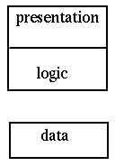
There are many examples of scuh systems: NFS, Microsoft shares, DCE, etc
Gartner第二种分类允许远程客户端访问已共享的文件系统：

这里有一些这类系统的例子：NFS、Microsoft共享和DCE等等。
An example of Gartner classification 3 is the Web with Java applets. This is a distributed hypertext system, with many additional mechanisms
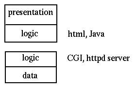
Gartner第三种分类的一个例子就是Web上的小型Java应用。以下为带有一些附加机制的分布式超文本系统：

An example of Gartner classification 4 is terminal emulation. This allows a remote system to act as a normal terminal on a local system.
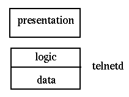
Telnet is the most common example of this.
Gartner第四种分类就是终端仿真。这允许远程系统在本地系统上作为普通的终端：

Telnet就是最常见的例子。
Expect is a novel illustration of Gartner classification 5. It acts as a wrapper around a classical system such as a command-line interface. It builds an X Window interface around this, so that the user interacts with a GUI, and the GUI in turn interacts with the command-line interface.
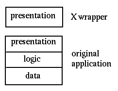
预期（Expect）是Gartner第五种分类的一种另类的演示。它的行为类似于命令行接口这样的经典系统。它在此之上建立了X窗口界面，以此来让用户与GUI进行交互，然后GUI转而与命令行界面进行交互。

The X Window System itself is an example of Gartner classification 5. An application makes GUI calls such as DrawLine, but these are not handled directly but instead passed to an X Window server for rendering. This decouples the application view of windowing and the display view of windowing.

X窗口系统本身也是Gartner第五种分类的一个例子。一个应用进行一次像 DrawLine 这样的GUI调用，但它并不直接进行处理，而是传递给X窗口服务来渲染。这可以解耦窗口应用视图和窗口显示视图。
of course, if you have two tiers, then you can have three, four, or more. Some of the three tier possibilities are shown in this diagram:
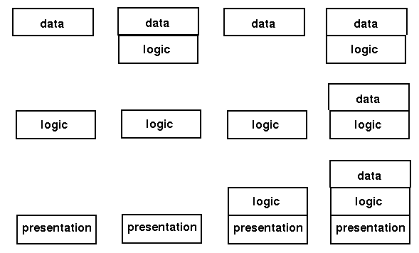
当然，如果你有两层，你也可以有三层、四层甚至多层。下图展示了一些可能的三层模型：

The modern Web is a good example of the rightmost of these. The backend is made up of a database, often running stored procedures to hold some of the database logic. The middle tier is an HTTP server such as Apache running PHP scripts (or Ruby on Rails, or JSP pages, etc). This will manage some of the logic and will have data such as HTML pages stored locally. The frontend is a browser to display the pages, under the control of some Javascript. In HTML 5, the frontend may also have a local database.
现代Web就是最右边那种模型很好的例子。后端建立为一个数据库，经常运行存储过程来保存一些数据库逻辑。中间层是一个Apache这样的运行PHP脚本（或Ruby on Rails，或JSP页面等）的HTTP服务器。这会管理一些逻辑和存储在本地的像HTML页面这样的数据。前端为显示由JavaScript控制的页面的浏览器。在HTML5中，前端也可以有一个本地数据库。
A common labelling of components is "fat" or "thin". Fat components take up lots of memory and do complex processing. Thin components on the other hand, do little of either. There don't seem to be any "normal" size components, only fat or thin!
组件一般分为“胖”或“瘦”。“胖”组件占用大量的内存来做复杂的处理；“瘦”组件则恰恰相反，只占少量内存，做简单处理。似乎没有任何“正常”大小的组件，只有“胖”或“瘦”！
Fatness or thinness is a relative concept. Browsers are often laelled as thin because "all they do is diplay web pages". Firefox on my Linux box takes nearly 1/2 a gigabyte of memory, which I don't regard as small at all!
“胖”或“瘦”的概念是相对的。浏览器经常被分为“瘦”组件，因为“它仅仅显示Web页面”。但我的Linux盒子中的Firefox用了将近1/2GB的内存，我可一点也不觉得它很小！
Middleware is teh "glue" connecting components of a distributed system. The middleware model is
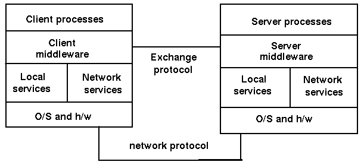
中间件是连接器分布式系统组件的“胶水”层。中间件模型如图所示：

Components of middleware include
中间件组件包括：
Examples of middleware include
中间件的例子包括：
The functions of middleware include
中间件的功能包括：
The Gartner model is based on a breakdown of an application into the components of presentation, application logic and data handling. A finer grained breakdown is
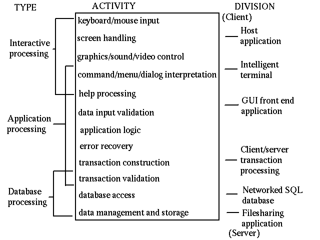
Gartner模型基于将一个应用分解为表现组件、应用逻辑和数据处理。一个更细粒度的分解方式为：

Distributed applications run in a complex environment. This makes them much more prone to failure than standalone applications on a single computer. The points of failure include
分布式应用一般运行在复杂的环境中。这使得它比单一计算机上的独立应用更易发生故障。故障点包括：
Applications have to be designed with these possible failures in mind. Any action performed by one component must be recoverable if failure occurs in some other part of the system. Techniques such as transactions and continuous error checking need to be employed to avoid errors.
在设计应用时必须考虑这些可能发生的故障。如果故障发生在系统的其它部分，那么由任何一个组件执行的操作都必须可恢复。这就需要采用事务和持续错误检测这类的计算来避免错误。
The "holy grails" of distributed systems are to provide the following:
分布式系统的“圣杯”就是提供以下几点：
Sun Microsystems was a company that performed much of the early work in distributed systems, and even had a mantra "The network is the computer." Based on their experience over many years a number of the scientists at Sun came up with the following list of fallacies commonly assumed:
Sun微系统公司在分布式系统上做很很多早期的工作，他们甚至有一个口头禅：“网络就是计算机”。基于他们多年的经验，Sun的科学家总结了以下常见误区：
Many of these directly impact on network programming. For example, the design of most remote procedure call systems is based on the premise that the network is reliable so that a remote procedure call will behave in the same way as a local call. The fallacies of zero latency and infinite bandwidth also lead to assumptions about the time duration of an RPC call being the same as a local call, whereas they are magnitudes of order slower.
这些问题直接影响着网络编程。例如，大部分远程过程调用系统的设计都基于网络是可靠的前提，从而导致了远程过程调用的行为与本地调用如出一辙。零风险和无限带宽的误区也导致了RPC调用的持续时间与本地调用相同的臆断，但实际上它要比本地调用慢很多。
The recognition of these fallacies led Java's RMI (remote method invocation) model to require every RPC call to potentially throw a RemoteException. This forced programmers to at least recognise the possibility of network error and to remind them that they could not expect the same speeds as local calls.
对于这些错误的认识导致了Java的RMI（远程方法调用）模型要求每一个潜在的RPC调用都要抛出一个 RemoteException 异常。这迫使程序员至少认识到了网络错误的可能性，并提醒他们不要期望这会与本地调用的速度相同。
Copyright Jan Newmarch, jan@newmarch.name
版权所有 © Jan Newmarch, jan@newmarch.name
If you like this book, please contribute using Flattr
or donate using PayPal